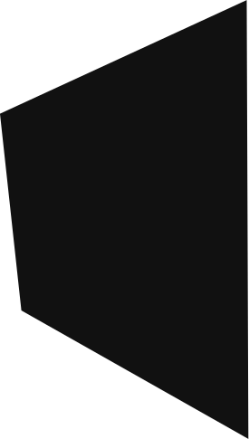
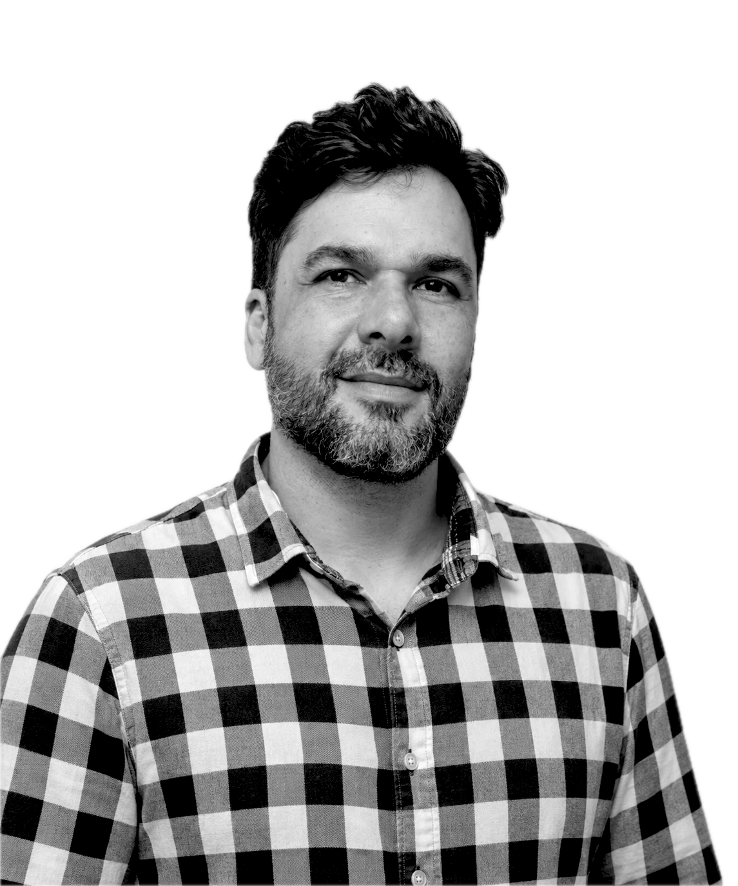
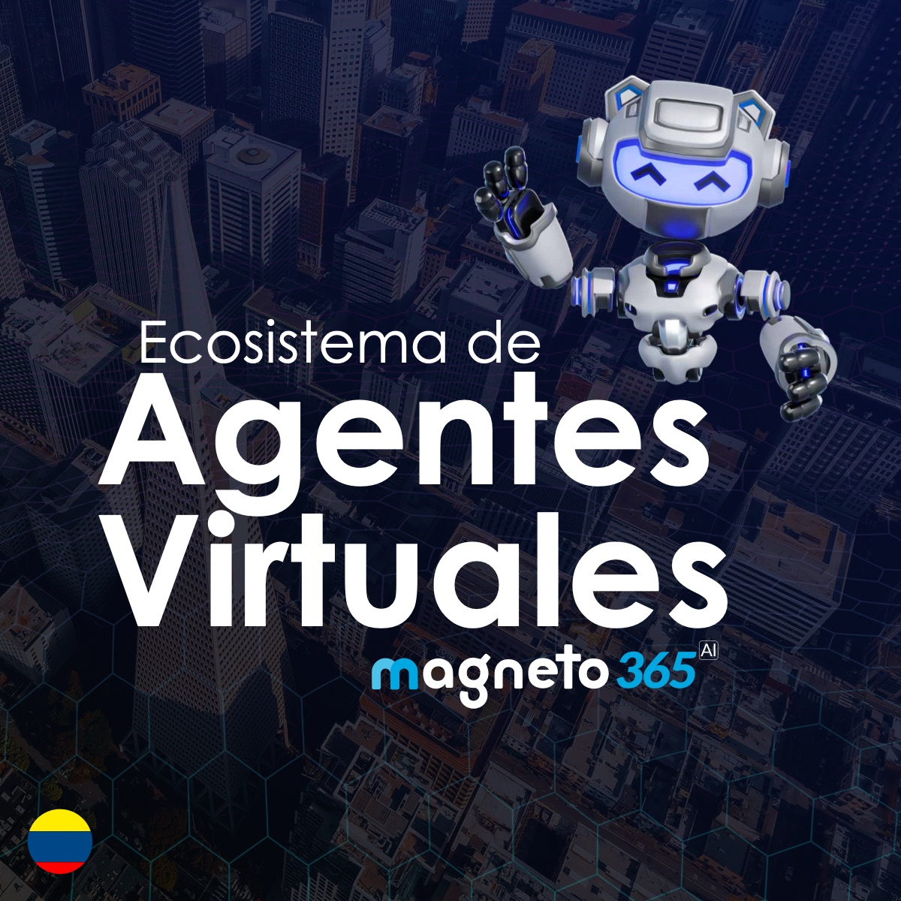
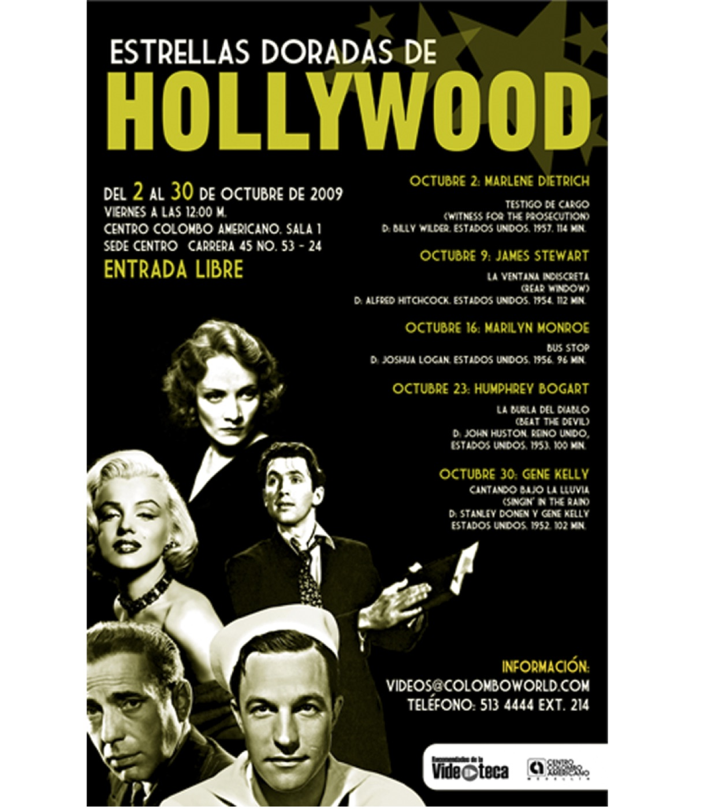
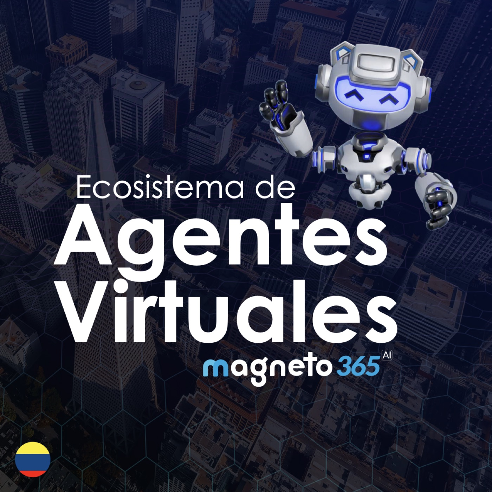

Diseñador de marca y web · Medellín, ColombiaDiseño marcas que conectan empresas con personas.

Diseño campañas y sistemas de marca, y construyo sitios en Webflow para marcas B2B, educación y cultura. 17 años de oficio, los más recientes en Magneto 365.
9 casos seleccionadosweb, campañas, marca y editorial- años de diseño de marca
- 10+
- estudiantes formados en UX/UI
- 300+
- proyectos al año
- 21–40
- Magneto 365
- SENA
- WorldSkills
- UdeA
- Colombo
Casos, no piezas sueltas

Sitio corporativo Magneto 365
Maquetación en Webflow · 15+ soluciones, 4 países, versión móvil

Coffee Break
Campaña en redes · videopodcast B2B

Magneto 365 AI Academy
Lanzamiento
Manual de marca Magneto 365 AI
Identidad · sistema de marca

Ecosistema de agentes virtuales
Producto · presentación de 21 láminas

WorldSkills Colombia · SENA
Eventos · editorial · infografía

One-pagers comerciales
Editorial B2B

E-book «Colombia vuelve al Mundial»
Contenido · editorial

Archivo 2009–2016
Afiches de cine, teatro, música y congresos
Así se construye un sistema
Lo aprendí enseñando a más de 300 estudiantes: una buena pieza se puede explicar, repetir y escalar.
- 01
Entender
Escucho al negocio, a los usuarios y al equipo comercial antes de abrir Figma.
- 02
Diseñar
Exploro direcciones, uso la IA para ampliar opciones y decido con criterio.
- 03
Sistematizar
Convierto la solución en plantillas, componentes y manuales que el equipo puede seguir.
20092026
- 2009–2013
UdeA · Colombo Americano
Afiches académicos y culturales: cine, teatro, música, congresos.
- 2013–2016

SENA Regional Antioquia
Editorial, campañas y eventos, incluido WorldSkills Colombia.
- 2017–2024
SENA · IUSH (docencia)
Instructor y docente: marca, UX/UI y diseño responsive.
- 2025–2026 Reciente

Magneto 365 · Diseñador B2B
Sitio en Webflow, marca, campañas y material comercial B2B.
Diseñador que también enseña
Diseñador visual y especialista en Gerencia de Marca, con más de diez años entre el estudio y el aula. Fui instructor en el SENA (2017–2024) y docente de cátedra en la IUSH (2020–2024), donde formé a más de 300 estudiantes en marca, UX/UI y diseño responsive.
Esa práctica de explicar, ordenar y estandarizar es la que hoy aplico a los sistemas de marca. Integro la IA generativa (ChatGPT, Claude y Claude Code) con criterio editorial y validación humana.
- Illustrator
- Photoshop
- InDesign
- After Effects
- Figma
- Webflow
- HTML/CSS
- Claude Code